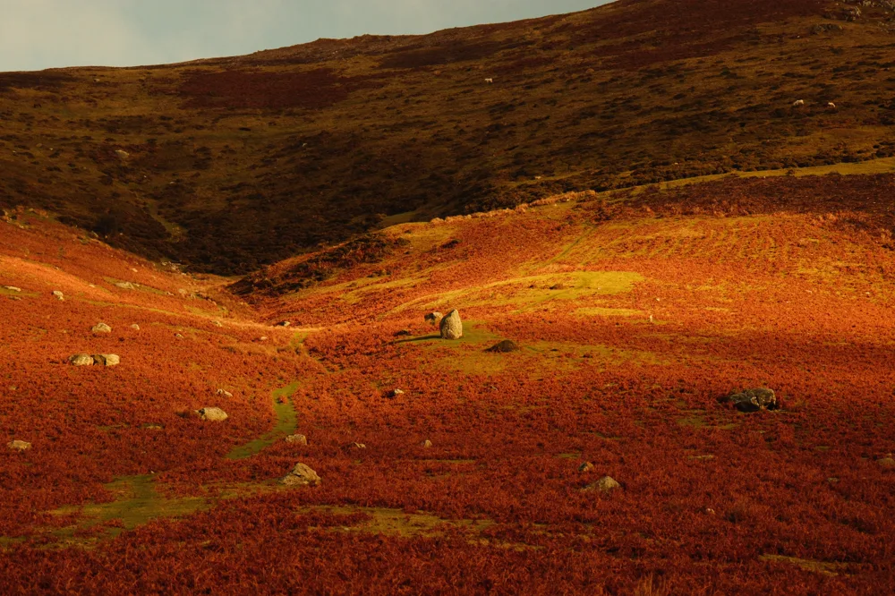
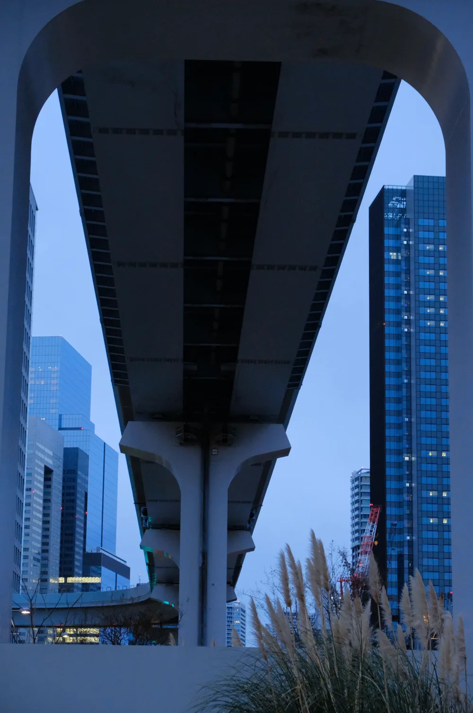
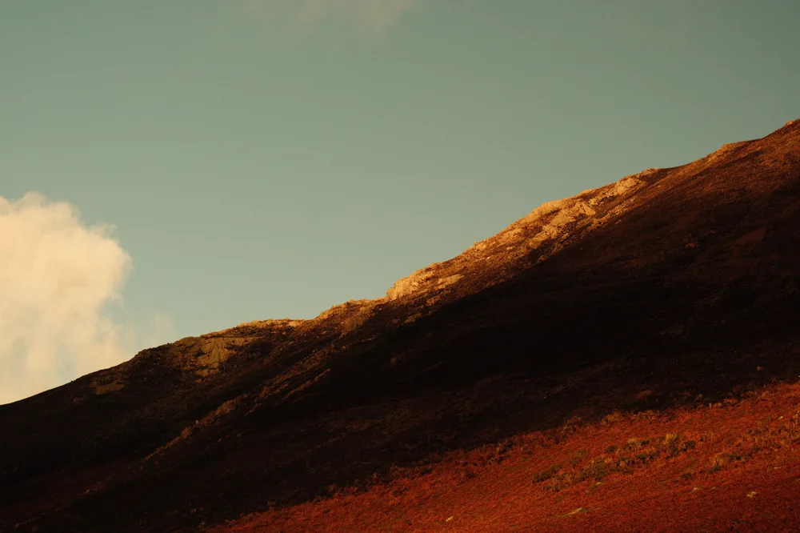

Photography
Photography is how I study light, composition and form, and it feeds directly into how I light and frame work in 3D.



Photography is how I study light, composition and form, and it feeds directly into how I light and frame work in 3D.


